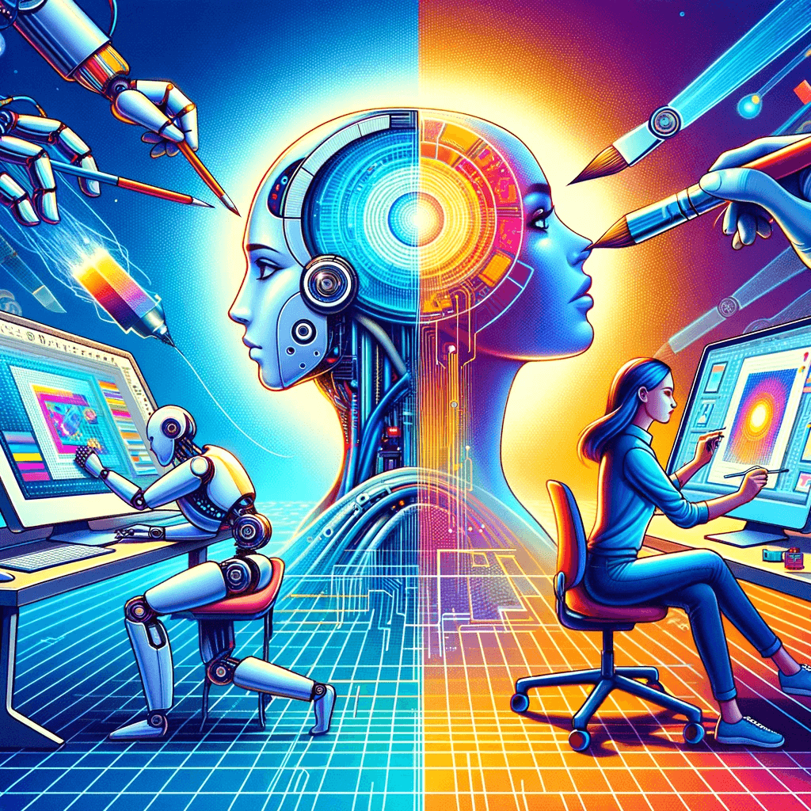
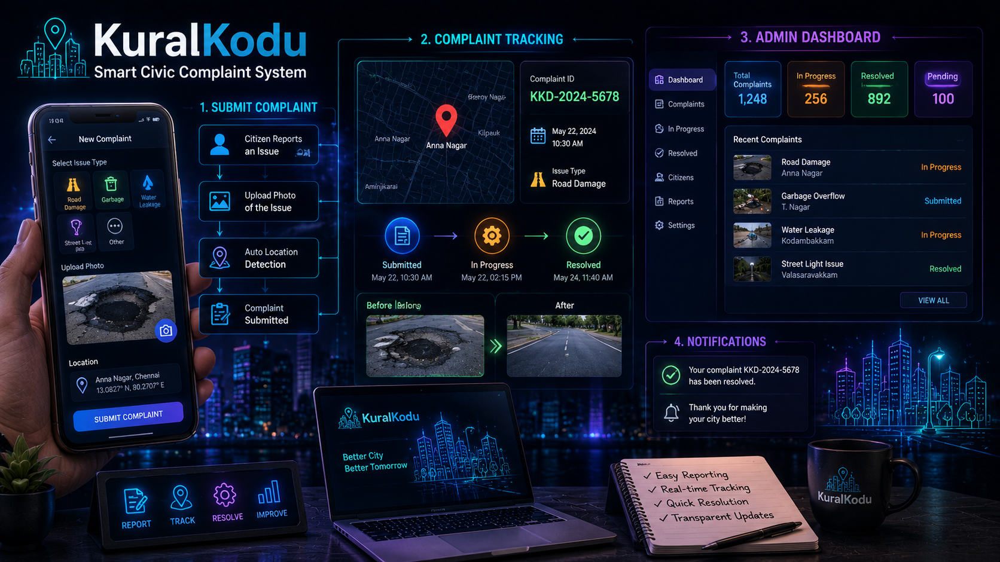
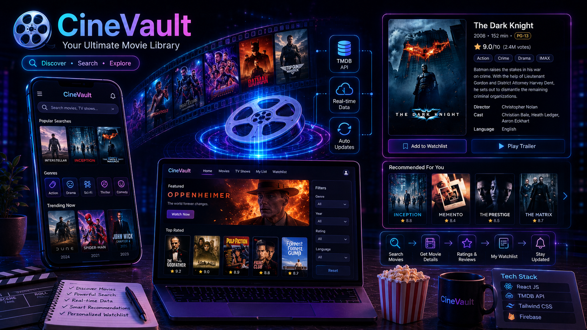

About Me
Hello! I'm Anto Jovita J, a 2026 B.Tech graduate in Artificial Intelligence and Data Science from DMI College of Engineering. I am passionate about Data Science, Generative AI, Machine Learning, Frontend Development, and UI/UX Design. I enjoy working on practical projects that combine data-driven and AI-powered solutions with intuitive, user-friendly interfaces. I also have knowledge of Search Engine Optimization (SEO), which helps me build web experiences with both users and search visibility in mind.
Education
B.Tech - Artificial Intelligence and Data Science
DMI College of Engineering
CGPA: 9.2 / 10
2022 – 2026
Skills
Data Science & AI
- Python
- Data Science
- Machine Learning
- Deep Learning
- CNN, RNN
- Generative AI
- AI Applications
- LLM & RAG
Frontend & Backend
- HTML
- CSS
- JavaScript
- React
- Node.js
- Express.js
UI/UX Design
- Figma
- Canva
Tools & Additional Skills
- Git & GitHub
- SEO
Internships & Achievements
- Web Development Intern - Codebind Technologies
- Data Analytics Intern - NoviTech R&D Pvt. Ltd
- Web Development Intern - TechnoHacks
- Top 5 Finalist - All India Women-Only Hackathon
- Published a research paper on AI-Driven Personalized Fashion
- 2nd Prize - Figma Design Competition
Courses & Certifications
- Data Science Course
- Generative AI Course - 40 Hours
What Drives Me
I enjoy exploring the intersection of data, technology, creativity, and human-centered design. From AI and data-driven applications to user-friendly web experiences, I am interested in using technology to solve real-world problems and create meaningful solutions.

My Projects
AI Data Science Analyst
An AI-powered data analysis application that allows users to upload CSV datasets and interact with their data using natural language. The system uses AI agents and tool calling to perform data analysis and generate insights.
Tech: Python, Pandas, NumPy, Scikit-learn, LangChain, LangGraph, Ollama, Streamlit
✔ Natural-language interaction with datasets
✔ AI-powered data analysis and insights
AI Research Agent
An AI-powered research assistant that allows users to upload research papers, ask questions, and receive evidence-grounded answers using Retrieval-Augmented Generation and semantic search.
Tech: Python, RAG, ChromaDB, Ollama, Qwen3, EmbeddingGemma, Streamlit
✔ Semantic search across uploaded research papers
✔ Evidence-grounded AI responses
✔ Supports research paper analysis and question answering

Insurance Cost Prediction
An end-to-end machine learning project that predicts individual medical insurance charges using Linear Regression, statistical analysis, feature engineering, and model evaluation.
Tech: Python, Pandas, NumPy, Scikit-learn, SciPy, Streamlit
✔ Statistical analysis and feature engineering
✔ Machine learning model deployed with Streamlit

Spam vs Ham SMS Classification
An end-to-end NLP and machine learning project that classifies SMS messages as Spam or Ham using text preprocessing, feature engineering, TF-IDF vectorization, and Logistic Regression.
Tech: Python, Pandas, NumPy, NLTK, Scikit-learn, Streamlit
✔ NLP text preprocessing and TF-IDF
✔ Hyperparameter tuning with GridSearchCV

Emotion-Based Facial Recognition
A deep learning and computer vision project that detects human emotions from facial expressions using a CNN-based model trained on the FER2013 dataset.
Tech: Python, TensorFlow, Keras, CNN, OpenCV, NumPy
✔ Facial expression-based emotion classification
✔ Computer vision and deep learning implementation

KuralKodu
A full-stack civic-tech application that allows users to report civic issues with images and location information, generate unique complaint IDs, track complaint status, and manage complaints through an admin dashboard.
Tech: Node.js, Express.js, MongoDB, Mongoose, HTML, CSS, JavaScript
✔ Civic complaint submission and tracking
✔ Image upload and admin dashboard

CineVault — Movie Library
A responsive movie search application that uses the TMDB API to search for movies and display details such as posters, directors, release years, ratings, and genres.
Tech: HTML, CSS, JavaScript, TMDB API, Vercel
✔ Movie search and search suggestions
✔ Debounced API requests and responsive UI

Let's Work Together
Aspiring Data Scientist & Frontend Developer building real-world applications with data-driven and AI-powered solutions.
- ✔ Available for internships / full-time roles
- ✔ Open to collaboration on real-world projects
© 2026 Anto Jovita J
I'm an AI & Data Science graduate with a strong interest in Data Science,
Generative AI, Machine Learning, and Frontend Development. I enjoy building
practical, data-driven and AI-powered applications with intuitive user
experiences. I'm open to internships, full-time opportunities,
collaborations, and real-world projects.